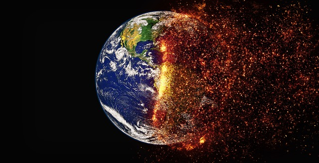

¿QUE ES EL CALENTAMIENTO GLOBAL?

El calentamiento global resulta del aumento del efecto invernadero, un proceso en el que la radiación térmica emitida por la Tierra queda atrapada en la atmósfera debido a los gases con ese efecto (GEI). Su presencia es natural y necesaria
para mantener la temperatura del planeta en unos valores habitables.
COMO COMBATIR EL CALENTAMIENTO GLOBAL
Regular las emisiones de CO2: Procurar evitar el uso de automóviles utilizando bicicletas u optando por cambiar nuestro auto convencional por uno electico o hibrido.
Plantar más árboles: Haciendo esto el exceso de CO2 en el ambiente empezaría a decrecer y los árboles actuarían como termorreguladores.
Reducir el uso de electricidad: Evitar dejar luces encendidas y desconectar aparatos eléctricos cuando no están en uso.